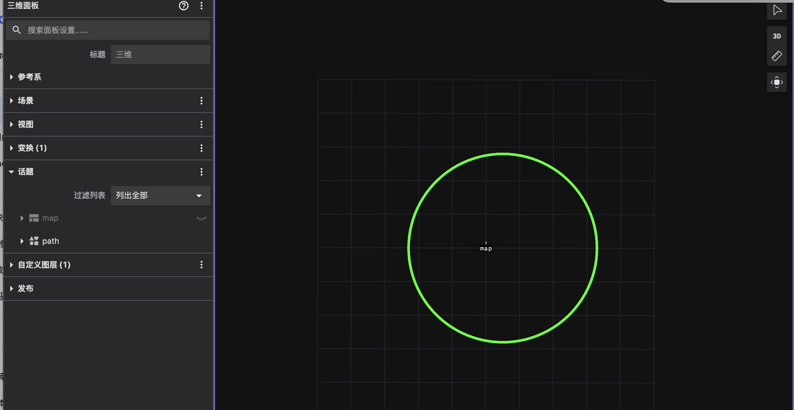
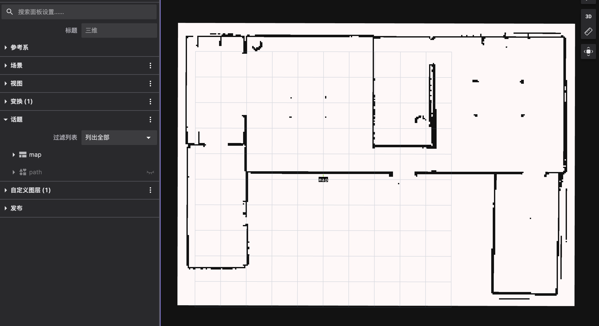

3. 数据类型
可视化工具消费的数据均来自 commsgs 命名空间，与 ROS 消息语义对齐。
3.1 按类别
sensor_msgs
类型 |
用途 |
|---|---|
|
2D 激光雷达 |
|
点云 |
|
相机图像 |
|
IMU |
|
超声波/红外距离 |
geometry_msgs
类型 |
用途 |
|---|---|
|
位姿 |
|
TF |
|
几何图元 |
map_msgs
类型 |
用途 |
|---|---|
|
静态/代价地图栅格 |
|
地图增量更新 |
|
多层栅格地图 |
visualization_msgs
类型 |
用途 |
|---|---|
|
箭头、立方体、线段等 |
|
批量 Marker |
|
交互式标记（RViz 风格） |
定义见 autonomy/commsgs/proto/visualization_msgs.proto。
vision_msgs
类型 |
用途 |
|---|---|
|
检测结果 |
|
包围框 |
3.2 实现完整度
包 |
struct |
proto |
ToProto/FromProto |
|---|---|---|---|
sensor_msgs |
✅ |
✅ |
✅ |
map_msgs |
✅ |
✅ |
✅ |
planning_msgs |
✅ |
✅ |
✅ |
visualization_msgs |
✅ |
✅ |
❌ stub |
详见 14 Commsgs · 综述。
3.3 路径可视化示例
规划路径使用 planning_msgs::Path，在 RViz / Foxglove 3D 面板中显示为折线：

3.4 地图可视化示例
代价地图/占据栅格使用 OccupancyGrid：
